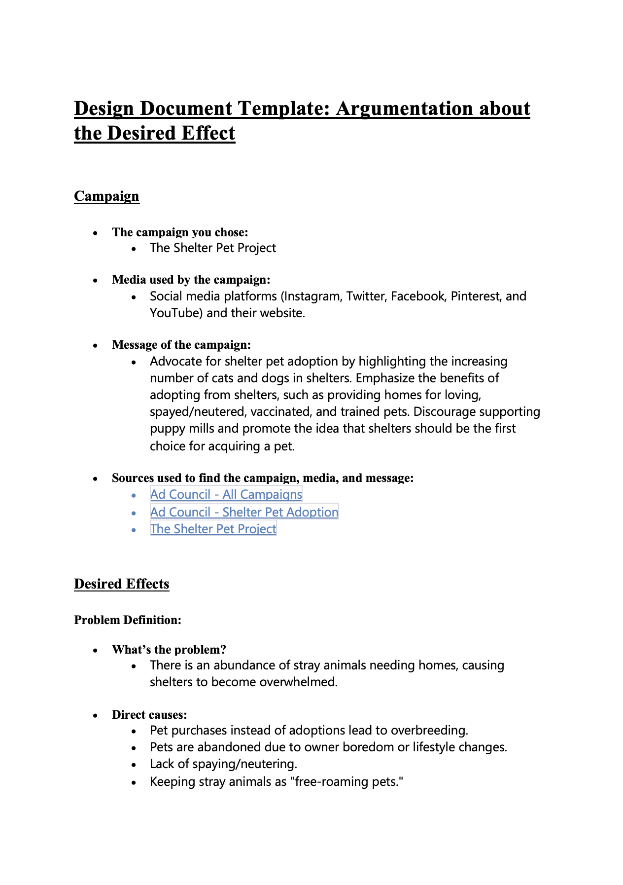
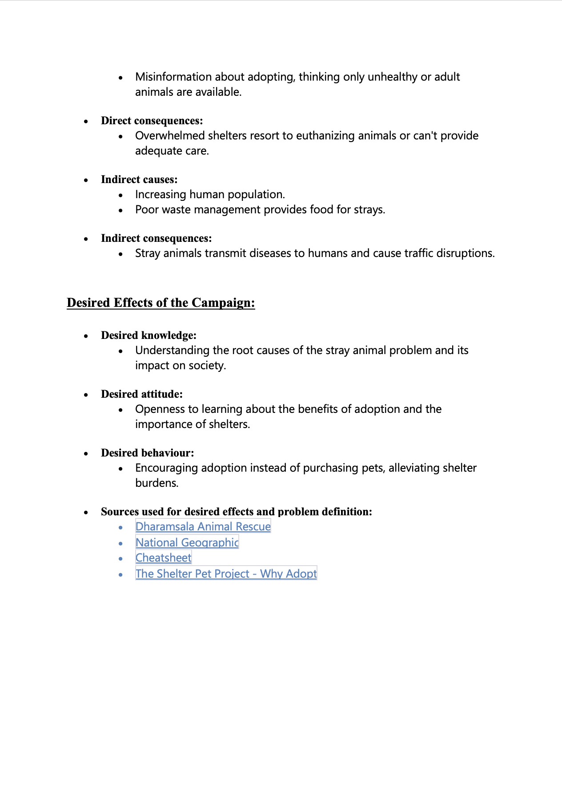
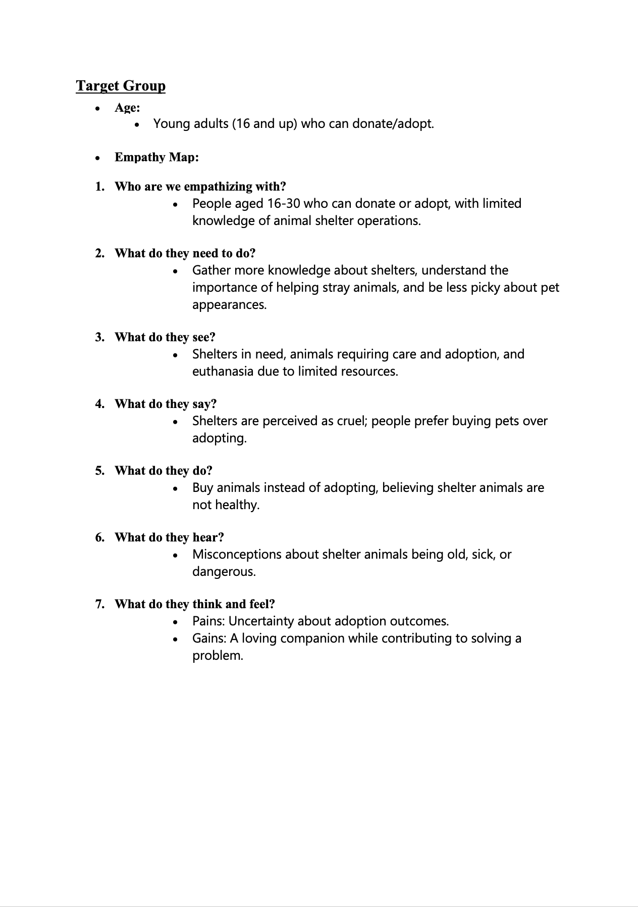
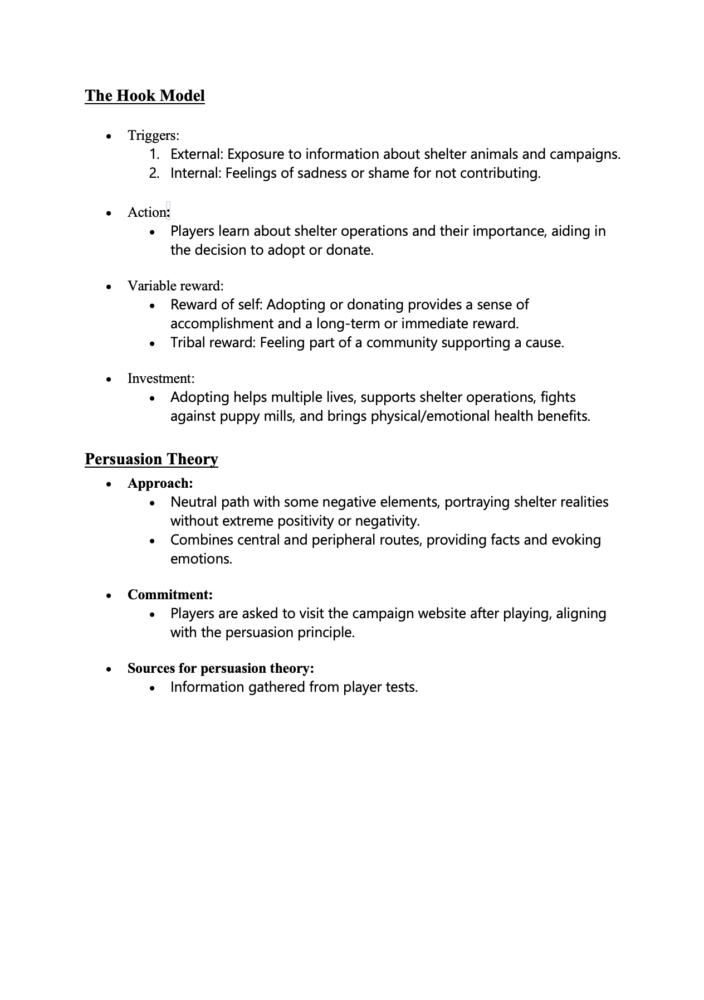
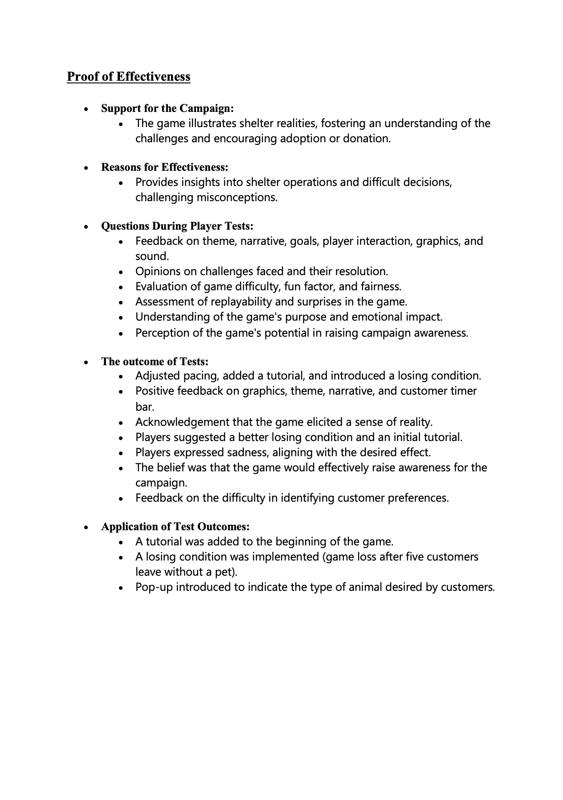
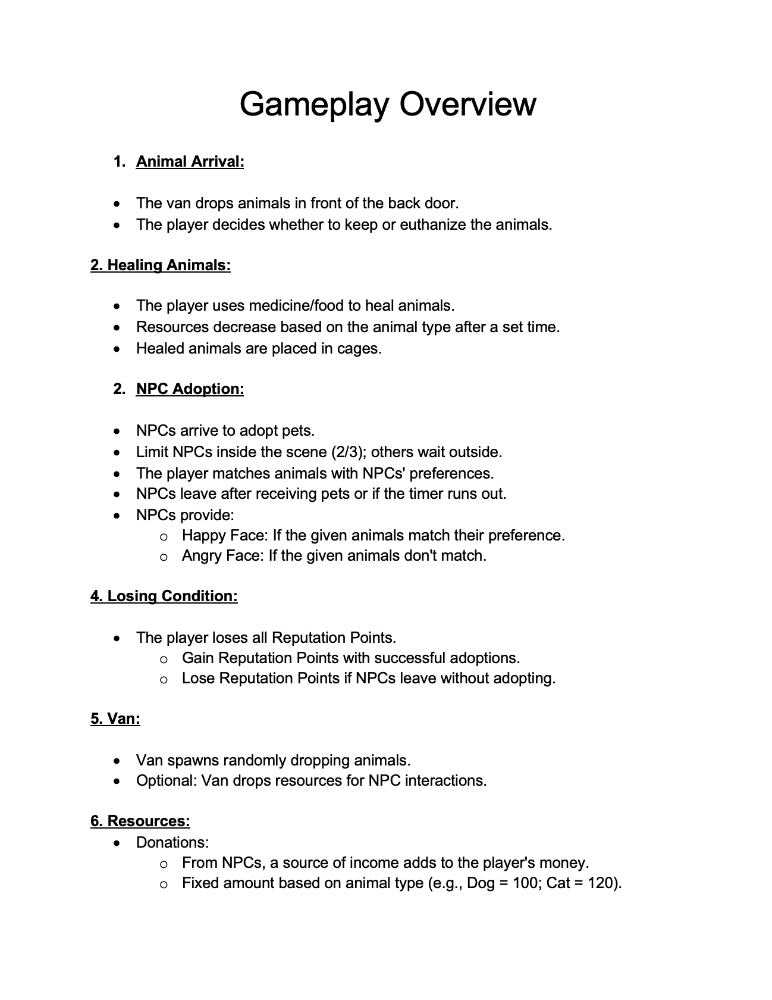
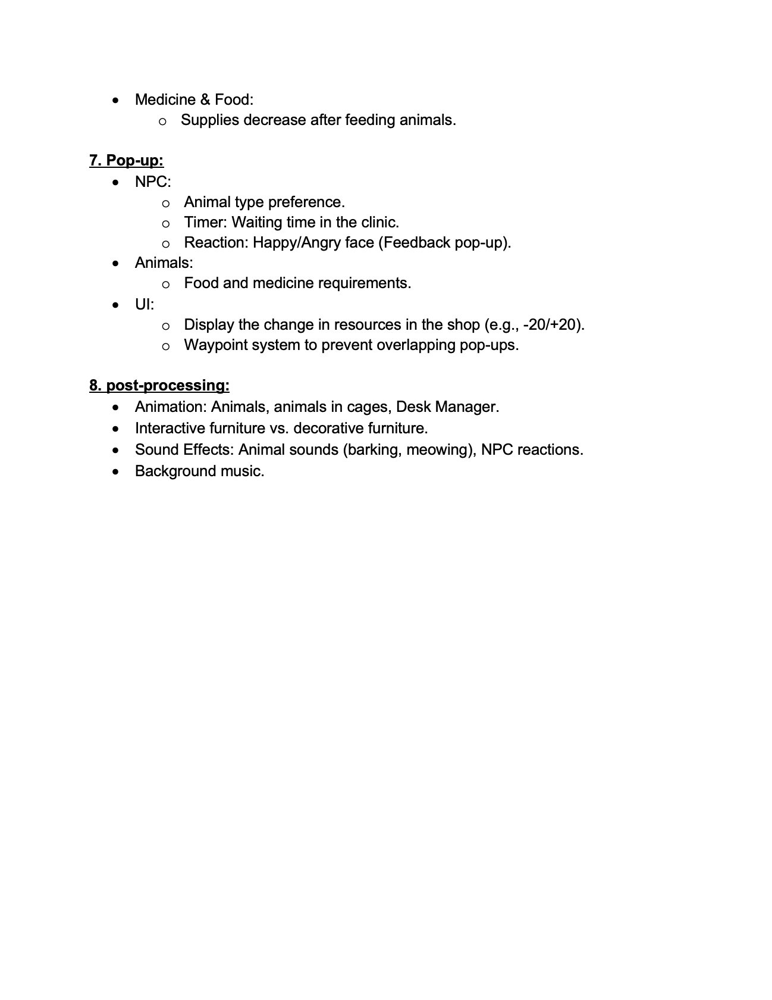

Game Concept
-
The concept of this game revolves around creating an engaging and educational experience that raises awareness about the importance of adopting pets from shelters instead of purchasing them.
The game is designed to provide players with insights into the challenges faced by animal shelters and the consequences of pet overpopulation.
-
Through a combination of a neutral yet informative approach, the game aims to dispel misconceptions about shelter animals, encourage players to consider adoption,
and prompt them to contribute either by adopting pets or making donations to shelters.
My Participation
-
In my role as the project's lead designer, I focused on ensuring effective communication within the team and managing key project documentation.
I played a pivotal role in maintaining a seamless flow of information among team members, fostering collaboration and synergy.
-
My responsibilities extended to crafting the Game Design Document (GDD),
detailing essential game mechanics, and shaping the intricacies of level design.
This involved a comprehensive approach to capture the essence of the project and provide a solid foundation for its development.
Design Document





Game Flow
-
The game initiates with a van delivering animals to the back door. As the player, you make decisions on whether to keep or euthanize each animal.
-
Following that, you employ medicine and food to treat the animals. Resources deplete over time, influencing your ability to care for them. Place the healed animals in cages within the limited storage space.
-
NPCs arrive to adopt pets. Skillfully manage NPC interactions to match animals with their preferences. Some NPCs may leave if the waiting time exceeds, impacting your reputation. NPCs provide feedback, expressing happiness or dissatisfaction based on the matches.
-
The player loses if Reputation Points drop to zero. Reputation Points increase with successful adoptions and decrease if NPCs leave unhappy.
-
The van periodically spawns, dropping off random animals. Optional resources, such as donations, may be part of the van's deliveries, contributing to your income.
-
Pop-up notifications provide essential information, including NPC preferences, waiting times, and feedback. UI elements display changes in resources and facilitate effective management.
-
Post-processing elements include animations for animals, cages, and the desk manager. Interactive and decorative furniture differs visually, enhancing the gaming experience. Sound effects, such as animal noises and NPC reactions, along with background music, contribute to the immersive atmosphere.


Additional contribution
- Playtesting
- Schedule
- PR